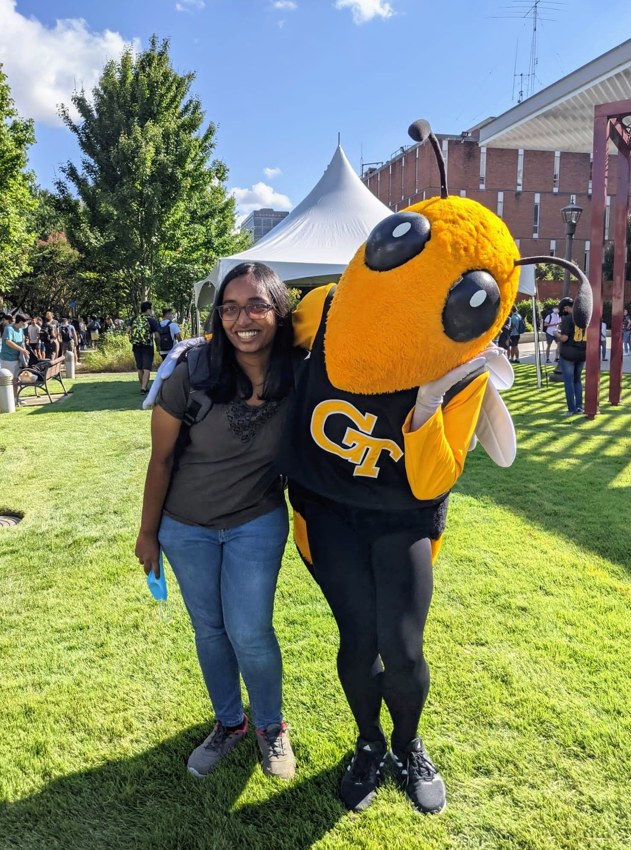
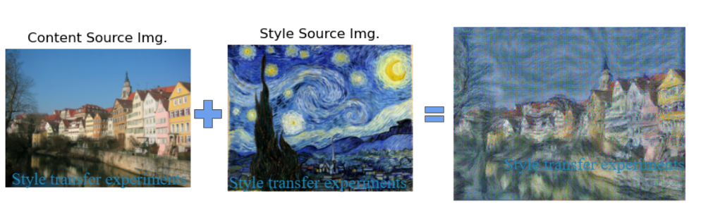
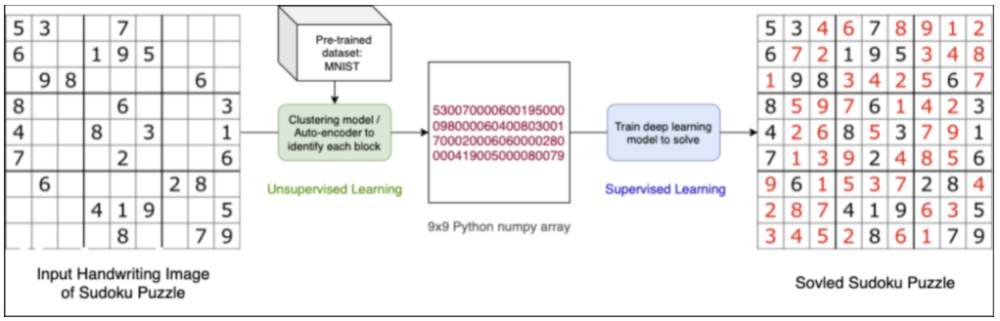
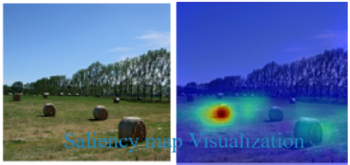
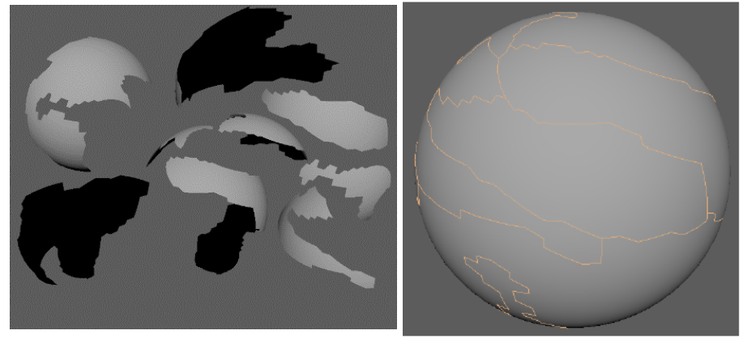

I'm a masters student in Analytics at Georgia Tech. Ideas related to explaining the behaviour of models in an interpretable manner excite me. I have worked on several interesting Applied Machine Learning ideas (listed below). Through these projects, I have acquired tools and skillsets that help me understand a situation, come up with useful hypotheses and perform experiments to validate them.
Coursework: Machine Learning, Computer Vision, Deep Learning, Math Foundations of ML, AI Ethics, Analytical Modeling, Simulation, Regression analysis, Data and Visual Analytics
Research: I am currently working with Prof. Polo Chau and am a part of Polo Club since May 2021. I strive to better understand how deep neural networks work in the context of Adversarial Machine Learning. With Deep Learning's remarkable success and its wide deployment, Adversarial examples are a major cause for concern especially in safety critical applications. I am working on explaining adversarial robustness of models using Visualization.
Prior to joining Georgia Tech, I worked at Robert Bosch Center for Data Science & AI on Adversarial Learning for Information Retrieval and analysing traffic and accident patterns during different phases of COVID. I also worked as a Risk Analyst in the Credit Risk Validation Team at UBS. I completed my Dual degree (Bachelors and Masters) in Civil Engineering at Indian Institute of Technology, Madras
Ever wondered why some photos are popular or are rated high in cuteness compared to others? We test several interesting hypothesis on what attributes paw-pularity to images of cats and dogs using different saliency map techniques using transfer-learning from pre-trained high performing network.

Wouldn't it be amazing to get Picasso or Van Gogh to paint your beautiful neighbourhood in their own style? Deep Learning helps us do exactly that! We take a content image and compose it in the style of the reference style image by minimising the style and content loss using backpropagation.

With Deep learning outperforming humans in various games like Atari and Go, we were curious to explore how big a challenge is a logic-based number game Sudoku.

We explore different types of saliency maps like Vanilla gradients, GradCAM, Guided backpropagation to understand what the network has learnt to interpret as the corresponding classes. This is crucial to be able to explain the model's behaviour especially when deployed in safety-critical situations.

We evaluate data related to prevalence of mental health disorders in the IT workplace and generate a profile for adults most prone to depression. This will help understand the risk factors that contribute to mental health disorders. The insights can also help guide company policies regarding mental health resources to protect their employees in the workplace. We propose several research questions and answer them using different models: Poisson Regression, Logistic Regression and RandomForest.

Part A: Game - The setup is a 2-member game and each member takes turns to play. Their actions are dictated by the roll of the die. Both of them start with the resource of a few coins and as the game progresses, the one who runs out of coins (when he does not have coins he is supposed to put in), the game ends and the person loses. Part B: Distribution Fitting - This project aims at creating routines that fit an input of random variables to a set of continuous / discrete distributions to determine the best fitting distribution for the sample data

In this work which got accepted to 35th ISARC 2018, we propose a framework that helps us geometrically reassemble fragments to their parent object in an unsupervised manner. With extensive applications in archaeology, this work expedites the reassembly process. It uses contour information along the edge of the fragments to perform the reassembly.